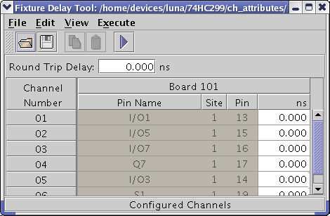

Configured channels
In the Configured Channels view (the figure below), only channels that are part of the current device setup are displayed (visible). You may need to scroll to see all of the visible channels. Selecting Boards in the View menu lists the data by board number as shown in the figure below; selecting Sites in the View menu lists the data by Site number.

Save the values for configured channels
On the menu, click .
Note To save the values for configured channels, a pin
configuration must be loaded.
Functional changes
- Introduced before SmarTest 6.3.2
- SmarTest 7.1.1: Save values for configured channels